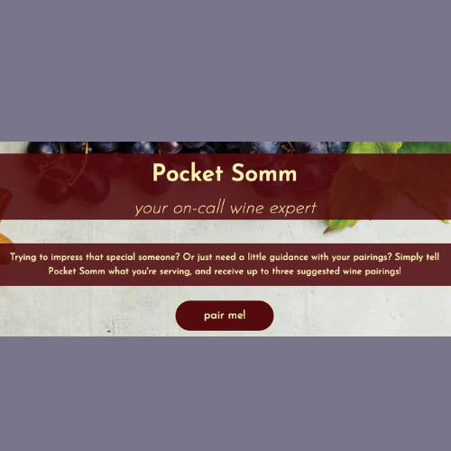
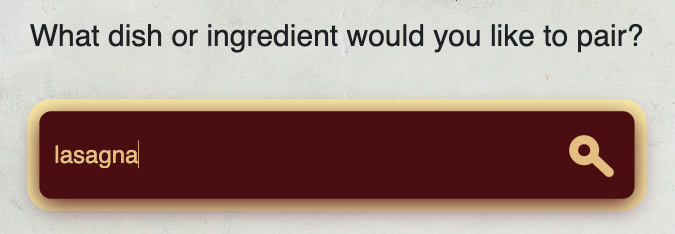
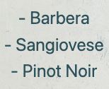
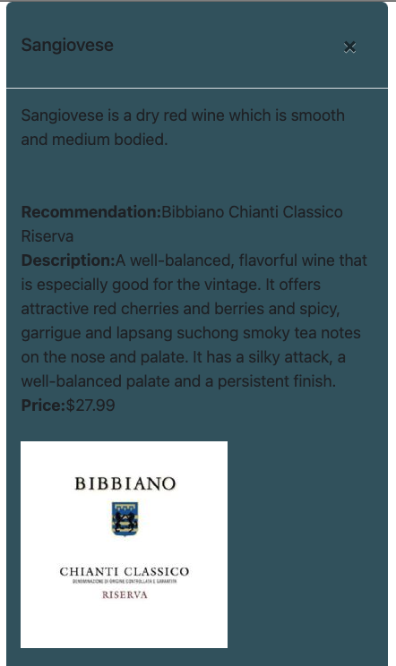

Front-End Project with APIs

About the project: Our class was assigned the task of coming up with an app that would make use of calls to two different APIs. Team Whine-os decided to create a wine pairing app called Pocket Somm. The name comes from the idea of having a sommelier (wine expert) on hand to help with selecting a wine to go with a specific food. We used openAI to get the wine pairings, and Spoonacular to get the wine descriptions. We were able to achieve one of our stretch goals, which was to be able to also suggest a specific bottle and include a link to where the bottle could be purchased.
Built With: JavaScript, CSS, HTML, Bootstrap, openAI
Usage: Type any food, ingredient, cuisine, etc into our searchbar:
And you will receive three suggested pairings:
You can click on one of the suggested wines to get more details such as a description and a link to a specific bottle that can be purchased online:
